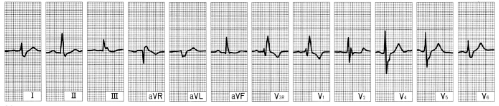

Uma mulher de 60 anos, diabética, hipertensa grave de longa data, portadora de angina estável, procura o
pronto-socorro com náusea e intensa dor precordial, com irradiação para o braço esquerdo, há 1 hora. Ela afirma que
costuma ter dor semelhante, de menor intensidade, provocada por esforços físicos, que cede com o uso de nitrato
sublingual e repouso, em 15 a 20 minutos. Estava repousando após o almoço, quando se iniciou a dor atual. Está calma,
pálida, hemodinamicamente estável, pulso rítmico, com ausculta cardíaca e pulmonar normais. O eletrocardiograma
mostra:

O hospital não dispõe de Serviço de Hemodinâmica e não há vaga na unidade de tratamento intensivo. O diagnóstico
mais provável e as medidas que devem ser implementadas na sala de emergência, após acesso venoso, repouso e
monitorização cardíaca e de pressão, são:
-
angina instável; iniciar analgesia com morfina ou nitroglicerina, aspirina, clopidogrel e betabloqueador e
anticoagulação profilática com heparina de baixo peso molecular.
-
angina prolongada em paciente já portadora de insuficiência coronária crônica; iniciar analgesia com nitroglicerina,
oxigênio por cateter, aspirina e betabloqueador.
-
angina instável ou infarto agudo do miocárdio − sem elevação de ST; iniciar analgesia com morfina ou nitroglicerina,
oxigênio por cateter, aspirina e betabloqueador e anticoagulação plena com heparina; iniciar coleta seriada de
enzimas cardíacas.
-
angina instável ou infarto agudo do miocárdio − sem elevação de ST; iniciar analgesia com morfina, oxigênio por
cateter e fibrinólise, com estreptoquinase ou alteplase, seguida de aspirina e betabloqueador e anticoagulação
plena com heparina; iniciar coleta de enzimas somente depois de 2 horas do início dos sintomas.
-
infarto agudo do miocárdio − sem elevação de ST; iniciar fibrinólise com estreptoquinase ou alteplase, analgesia
com nitroglicerina, betabloqueador e anticoagulação plena com heparina; iniciar coleta seriada de enzimas
cardíacas.